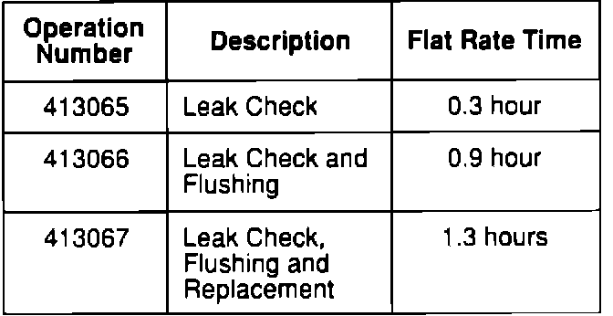

Warranty Claim Information

In warranty: The normal warranty applies. Out-of-warranty: Any repair performed after warranty expiration may be eligible for goodwill consideration by the District Service Manager. You must request consideration, and get the DSM's decision, before starting work.
Failed P/N: P/N 57193-SG0-802
Defect code: 060
Contention code: B99
NOTE: Create a straight-time operation number for any Tech Line-instructed diagnosis or repair.